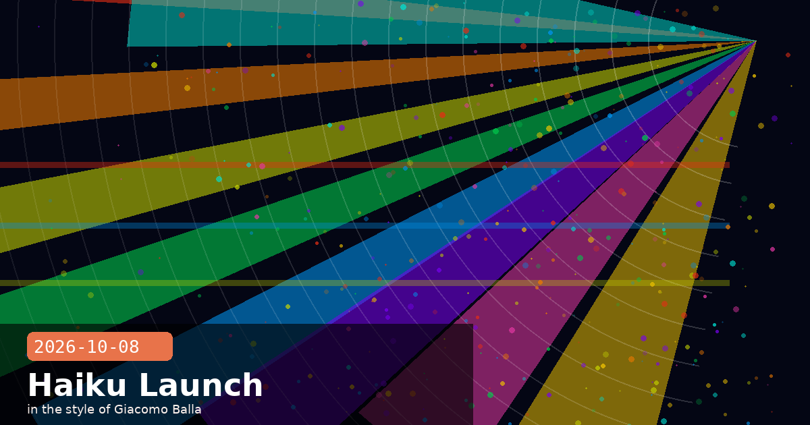

Haiku 5.5 Launches at 90% Off — Google Workspace Beta + Free Startup Programme

🧭 Claude Haiku 5.5 Is Here — 90% Cheaper, Faster Than Ever, With Full Tool Use
Anthropic launched Claude Haiku 5.5 this week, positioning it as the fastest and most cost-efficient model in the Claude family to date. The headline change is pricing: for requests under 100,000 tokens, Haiku 5.5 drops to $0.10 per million input tokens and $0.50 per million output tokens — a roughly 90% reduction compared to Haiku 4.5 and competitive with OpenAI's GPT-6 Luna tier. Typical production workload costs fall around 75% on a like-for-like basis.
What's improved
Speed: Haiku 5.5 beats Haiku 4.5 on time-to-first-token across all tested regions; Anthropic reports sub-200 ms median TTFT at standard load on its own API.
Quality at scale: On classification, document summarisation, and structured-extraction benchmarks, Haiku 5.5 matches or exceeds Sonnet 4.5 performance from early 2026 — meaning the "small cheap model" bar has risen substantially.
Tool use and agentic pipelines: The model ships with full support for the tools/function-calling interface, computer use (beta), and multi-turn memory. Teams running large agentic graphs — where Haiku handles routing, filtering, or sub-agent tasks — can now use the 5.5 model throughout without quality degradation at the leaf nodes.
Context window: 200,000 tokens, same as the rest of the Claude 5.x family.
Availability
Haiku 5.5 is available immediately on the Anthropic API (model ID claude-haiku-5-5-20261007), AWS Bedrock, Google Cloud Vertex AI, and Azure AI Foundry. Existing Haiku 4.5 integrations do not auto-migrate; teams must update the model string to take advantage of the new pricing.
When to reach for Haiku 5.5
Haiku 5.5 is the right choice for any workload where you need high throughput, predictable low cost, and don't require the deepest reasoning that Sonnet or Opus offer. Ideal use cases: document triage, intent classification, FAQ deflection, agentic sub-routing, real-time autocomplete, and streaming chat responses where latency matters more than nuance. At $0.50/M output tokens, even a million-message-per-day product becomes economically straightforward.
Haiku 5.5pricingspeedAPIagentic pipelinescost efficiencytool use
🧭 Claude Goes Native in Google Docs, Sheets, and Slides — Bidirectional Workspace Integration Now in Public Beta
Anthropic and Google have moved their Workspace integration out of private preview into public beta for all paid Claude plans (Pro, Team, and Enterprise). Claude now appears as a native sidebar inside Google Docs, Sheets, and Slides — and the integration is bidirectional: you can start in Claude.ai and create or edit Google files there, or open a Google file and invoke Claude alongside it without copying and pasting between tabs.
Capability breakdown by app
Google Docs: Claude can edit text in-place (sentence rewrites, heading restructuring, tone adjustment) while preserving the document's existing formatting, styles, and comment threads. The default mode is "Ask before edits" — Claude proposes changes and waits for acceptance rather than overwriting content silently.
Google Sheets: Formula generation, pivot-table construction, and Python-based data analysis via the Code Execution tool. Claude can interpret a plain-English question ("show month-on-month growth as a percentage column") and write the formula or Apps Script directly into the selected cell range.
Google Slides: Claude can generate new slides from a text brief, using the existing deck's theme and master slides as a template so outputs match the visual style of the presentation rather than defaulting to generic layouts.
Enterprise features
Enterprise-tier accounts get additional controls: a Compliance API for audit logging, customer-managed encryption keys for documents passed through Claude, and OpenTelemetry-compatible audit exports for integration with existing SIEM stacks. Data handling follows Anthropic's standard zero-training-on-API-traffic commitment — documents processed through the Workspace integration are not used to train future Claude models.
How to activate
Open the Google Workspace Marketplace and install the "Claude by Anthropic" add-on. Pro and Team plan users sign in with their existing claude.ai account. Enterprise accounts need an admin to approve the Marketplace install and configure the SCIM provisioning if using SSO. The integration is included in all existing paid plans — no additional charge.
Google WorkspaceGoogle DocsGoogle SheetsGoogle Slidesintegrationspublic betaenterprise
🧭 Anthropic for Startups: One Free Year of Claude Team + $1,000 in API Credits for Early-Stage Builders
Anthropic launched Anthropic for Startups this week — a new programme offering qualifying early-stage companies one year of Claude Team (up to five premium seats, worth roughly $500) plus $1,000 in API credits. The company's stated intent is direct: "We created this programme because we believe the benefits of AI will reach most people through the companies that build on top of models." The offer is designed for founders who are past the hobbyist stage but not yet at the scale where an enterprise contract makes sense.
What's included
Claude Team plan (12 months): Up to five seats with priority access to Claude Opus 4.6 and Sonnet 4.6, 200K context, Projects, and the full Claude Code integration — the same plan that typically costs $25–30/user/month.
$1,000 API credits: Applied directly to the startup's API account; valid for 12 months and usable across any Claude model including Haiku 5.5 and any new releases during the period.
Founder office hours: Monthly group sessions with Anthropic's developer-relations team — Q&A on model selection, prompt architecture, safety-by-design, and go-to-market questions.
Eligibility and how to apply
Companies must be early-stage (broadly defined as pre-Series B), actively building a product on Claude, and not currently on an enterprise plan. Applications are reviewed on a rolling basis at anthropic.com/startups. There is no equity component — this is not an accelerator programme; it is a direct subsidy to lower the barrier to building on Claude.
Worth comparing to the competition
OpenAI's Startup Programme offers $2,500 in credits (no free seats). Google's Gemini startup track offers $1,000 in Vertex credits. Anthropic's package is competitive primarily because of the bundled Team seats: for a small founding team that uses Claude heavily in day-to-day work (writing, coding, research), the Team plan alone is arguably more valuable than the API credits in the first year.